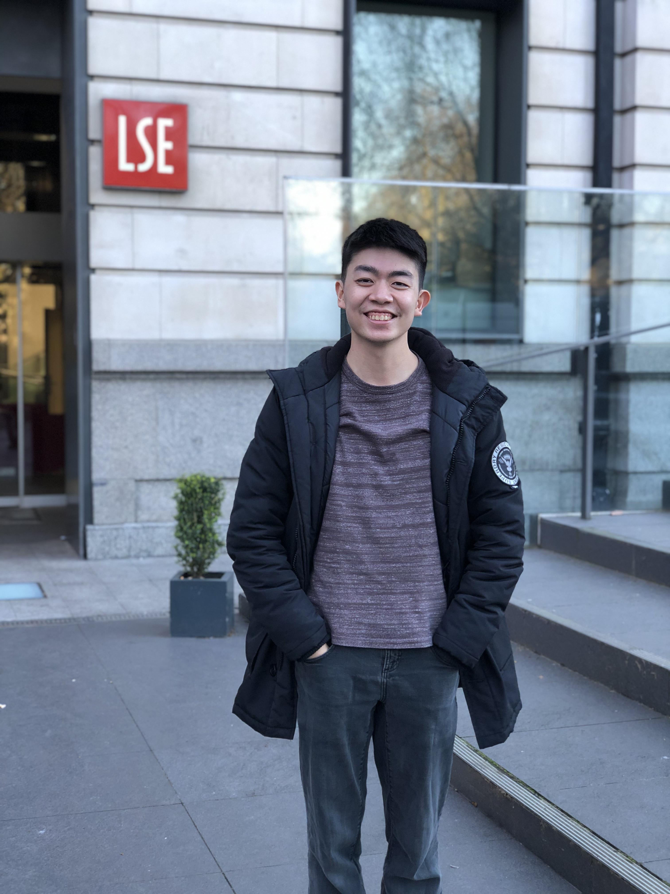

Jonathan Siow CV

My academic background in management and economics, coupled with practical experience in data and geospatial technology, has positioned me at the intersection of data, technology, and public policy. As issues grow in complexity, my role as a bridge between technology adoption and policymaking, and facilitator of public-private partnerships, has equipped me with a robust understanding of innovation, digital inclusion, and regulation. In particular, I work closely with stakeholders in the urban planning, sustainability, education, and social sectors to develop data-sharing programs for visualization and analytics.
Education
The London School of Economics and Political Science (LSE), 2017-2020
BSc Management, First Class Honours
- R project: predicting adoption outcomes and resource allocation in animal shelters.
- Simulation project: impact of COVID on South Warwickshire’s population and healthcare system.
- Enactus UK: Project Manager of student-led social enterprise to combat poverty and unemployment in
London through employment workshops, clothes donations, and job matching.
- >Microfinance Society: Research Analyst with CARE International UK to evaluate microfinance in Niger.
- Students for Children (Education): Vice-President (Mentorship) with charities and non-profit
organisations including Brightside, ReachOut, Young Enterprise, and Project Access.
Work Experience
Manager (Data Architecture), 2022-Present
Smart Nation and Digital Government Office (SNDGO)

- Implemented the Government Data Architecture, a whole-of-government data sharing programme to
improve the discoverability, quality, and utilisation of >200 priority datasets across >40 agencies and
enable more data-driven policymaking, operations, and service delivery.
- Managed >$XXXm of central funding to elevate agencies’ data, tools and platforms, and coordinated
data infra, tech stacks, and commercial-off-the-shelve solutions across the public sector.
- Provided technical consultancy to raise agencies' data and tech maturity and fostered public-private
partnership through non-govt data sharing and collaboration.
Principal Geospatial Consultant, 2020-2022
Singapore Land Authority (SLA)

- Coordinated geospatial committees and work groups, represented by >20 public sector agencies, to
drive the use of geospatial for Singapore’s Smart Nation and sustainable development.
- Ran eight Geospatial Masterplan consultations with >100 representatives across >50 government
agencies, companies, and IHL, charting the next phase of Singapore’s geospatial journey.
- Represented Singapore at the UN-GGIM (under ECOSOC), World Bank, Informal Meeting of ASEAN
Geospatial Agencies, and conferences (e.g. Geo Connect Asia, SG Geospatial Festival), strengthening our
thought leadership and partnerships in the global geospatial arena.
International Summer School Consultant, 2019-2021
The London School of Economics and Political Science (LSE)

- Organised LSE’s flagship summer schools with Peking University (PKU) and University of Cape Town
(UCT); in 2019, the LSE-PKU summer school featured >10 courses, which attracted 480 participants
across >40 nationalities and generated >£XXXk net profit for LSE.
- Prepared benchmarking report on student mobility for the LSE 2030 Strategy.
Languages and Skills
Languages
English (Native Proficiency), Mandarin (Native Proficiency), Bahasa Melayu (Limited Proficiency)
Technical Skills
Microsoft Office, R, Python, QGIS/ArcGIS, Tableau, Salesforce
Interests
Street Photography, Social Impact, Current Affairs
Contact Details